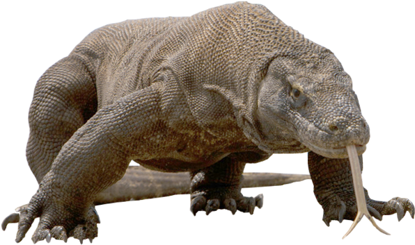
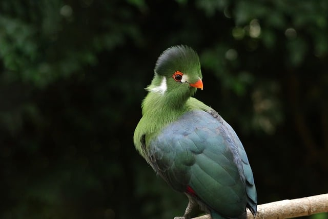
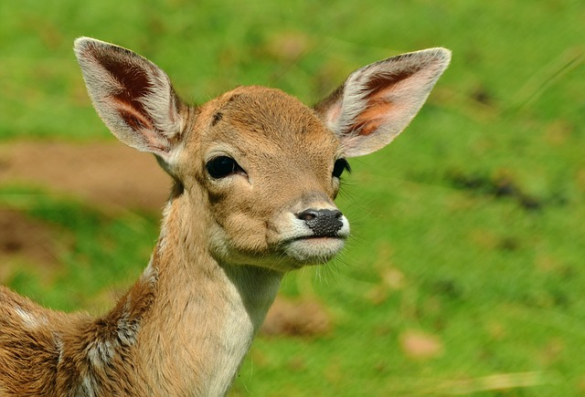
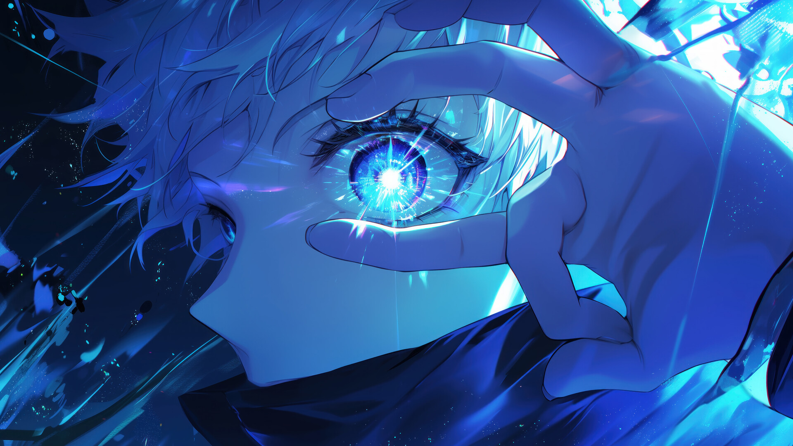
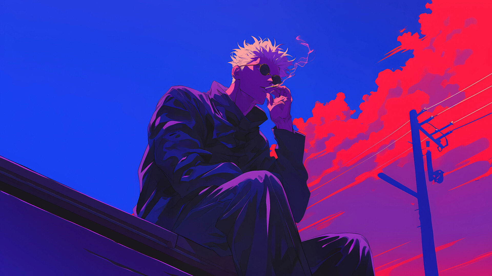
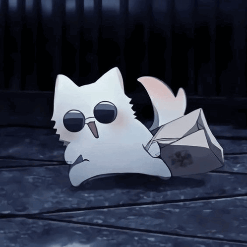

Dragón de komodo

El dragón de Komodo (Varanus komodoensis) es el lagarto más grande del mundo, endémico de algunas islas de Indonesia central, como Komodo, Rinca, Flores y Gili Motang. Estos impresionantes reptiles pueden alcanzar una longitud de hasta 3 metros y pesar alrededor de 70 kg, aunque algunos ejemplares pueden superar los 100 kg. Su tamaño y fuerza los convierten en los superpredadores de su hábitat, donde cazan y se alimentan de una variedad de presas, incluyendo invertebrados, aves y mamíferos.
Los dragones de Komodo tienen una apariencia robusta con una piel escamosa de color gris o marrón, una cabeza ancha y plana, y una cola musculosa. Son conocidos por su saliva, que contiene una mezcla de bacterias y toxinas que pueden causar infecciones graves en sus presas. Utilizan su agudo sentido del olfato para rastrear a sus víctimas a largas distancias, a menudo siguiendo a animales heridos hasta que sucumben a las infecciones.
En cuanto a su reproducción, las hembras ponen hasta 30 huevos en nidos de megápodos abandonados, y los incuban durante unos siete u ocho meses. Los jóvenes dragones de Komodo son vulnerables a los depredadores, incluidos los adultos de su propia especie, por lo que pasan sus primeros meses de vida en los árboles. Estos lagartos pueden vivir hasta 50 años y son capaces de reproducirse por partenogénesis, un proceso en el que las hembras pueden poner huevos viables sin necesidad de un macho.
Turaco
Los turacos son aves de tamaño mediano a pequeño, pertenecientes a la familia Musophagidae y son endémicas del África subsahariana. Estas aves son conocidas por su plumaje vibrante y colorido, que incluye tonos de verde, azul, rojo y violeta, gracias a pigmentos únicos como la turacina y la turacoverdina. Los turacos tienen alas redondeadas, colas largas y patas fuertes, lo que los convierte en excelentes trepadores, aunque no son muy buenos voladores. Viven en bosques, arboledas y sabanas, y son aves frugívoras, alimentándose principalmente de frutas, pero también de hojas, brotes y flores. Los higos son una parte importante de su dieta. Los turacos son aves gregarias y no migratorias, que se mueven en grupos familiares de hasta 10 individuos. Son conocidos por sus llamadas ruidosas y penetrantes, que a menudo alertan a otros animales de la presencia de depredadores. Una característica interesante de los turacos es su capacidad para mover el cuarto dedo del pie hacia adelante y hacia atrás, lo que les ayuda a agarrarse mejor a las ramas. Construyen grandes nidos de palos en los árboles y suelen poner de 2 a 3 huevos. Las crías nacen con un grueso plumón y los ojos abiertos o casi abiertos. Estas aves no solo son fascinantes por su apariencia y comportamiento, sino también por su papel en los ecosistemas africanos como dispersores de semillas.
Bambi
El ciervo es un mamífero herbívoro perteneciente a la familia Cervidae, que incluye a especies como los venados, alces y renos. Los ciervos son conocidos por sus astas ramificadas, que solo los machos desarrollan y utilizan principalmente durante la temporada de apareamiento para competir por las hembras y establecer su dominio en la jerarquía social. Estas astas son estructuras óseas que se renuevan anualmente. Los ciervos habitan en una amplia variedad de entornos, desde tundras árticas hasta selvas tropicales, y se encuentran en casi todos los continentes, excepto en Australia y la Antártida. Son animales rumiantes, lo que significa que tienen un sistema digestivo especializado con varias cámaras que les permite fermentar y digerir eficientemente la vegetación. Su dieta incluye hojas, brotes, hierbas y corteza de árboles. En cuanto a su comportamiento social, los ciervos suelen formar grupos según su edad y sexo. Las hembras y sus crías viven en manadas, mientras que los machos adultos tienden a ser más solitarios o a formar pequeños grupos. Durante la época de celo, los machos luchan entre sí usando sus astas para ganar el derecho de aparearse con las hembras. Este comportamiento es crucial para la selección natural y la perpetuación de la especie.
Jujutsu Kaisen

Jujutsu Kaisen es un anime basado en el manga del mismo nombre, escrito e ilustrado por Gege Akutami. La historia sigue a Yuji Itadori, un estudiante de secundaria con una fuerza física extraordinaria, que se ve envuelto en el mundo de los hechiceros y las maldiciones después de encontrar un objeto maldito.
La trama se centra en la lucha contra las maldiciones, seres sobrenaturales que nacen de las emociones negativas de los humanos. Yuji, tras ingerir un dedo de Ryomen Sukuna, una poderosa maldición, obtiene habilidades especiales y se convierte en un hechicero jujutsu. A partir de ahí, se une a la Escuela Técnica de Magia Metropolitana de Tokio, donde entrena para controlar sus nuevas habilidades y combatir las maldiciones.
A lo largo de la serie, Yuji forma un fuerte vínculo con sus compañeros de clase, Megumi Fushiguro y Nobara Kugisaki, y su mentor, Satoru Gojo, uno de los hechiceros más poderosos. Juntos, enfrentan diversas amenazas y descubren los oscuros secretos del mundo de las maldiciones.

Jujutsu Kaisen combina acción intensa, elementos sobrenaturales y un desarrollo profundo de personajes. La serie destaca por su animación de alta calidad y sus emocionantes escenas de combate. Aunque el manga aún está en desarrollo, el anime ha capturado la atención de muchos fans alrededor del mundo,
El manga, escrito e ilustrado por Gege Akutami, comenzó a publicarse en marzo de 2018 en la revista Weekly Shōnen Jump y ha sido recopilado en 28 volúmenes hasta la fecha12. La adaptación al anime, producida por el estudio MAPPA, se estrenó en octubre de 2020 y ha tenido dos temporadas, además de una película precuela llamada Jujutsu Kaisen 0.
Jujutsu Kaisen combina elementos de fantasía oscura y sobrenatural con intensas escenas de acción y un profundo desarrollo de personajes. La serie explora temas como la lucha contra el mal, la amistad y el sacrificio. La animación de alta calidad y las emocionantes secuencias de combate han sido ampliamente elogiadas.
Desde su lanzamiento, Jujutsu Kaisen ha tenido un gran impacto en la cultura popular, convirtiéndose en una de las series más vistas y leídas a nivel mundial. Ha recibido numerosos premios y ha sido aclamada tanto por la crítica como por los fans.
Gojo Satoru
Satoru Gojo es un hombre alto y delgado, con cabello blanco y ojos azules brillantes que generalmente cubre con una venda negra o gafas de sol. Su apariencia distintiva y su estilo relajado lo hacen fácilmente reconocible.
Gojo es conocido por su personalidad carismática y confiada. Es extremadamente seguro de sus habilidades y a menudo muestra una actitud despreocupada y juguetona, especialmente con sus estudiantes y colegas. Sin embargo, puede ser implacable y despiadado con sus enemigos, mostrando una faceta más seria y calculadora cuando la situación lo requiere.  Gojo es un hechicero jujutsu de grado especial, considerado el más fuerte de su generación. Es el primer miembro en 400 años de la familia Gojo en heredar tanto el Limitless como los Six Eyes. Estas habilidades le permiten manipular el espacio a su alrededor y percibir el flujo de energía maldita con una precisión extrema.
Gojo trabaja como profesor en la Escuela Técnica de Magia Metropolitana de Tokio, donde entrena a jóvenes hechiceros jujutsu, incluyendo a los protagonistas Yuji Itadori, Megumi Fushiguro y Nobara Kugisaki. Utiliza su influencia y poder para proteger a sus estudiantes y desafiar las estructuras tradicionales del mundo jujutsu. Juega un papel crucial en la trama de Jujutsu Kaisen, no solo como mentor de los protagonistas, sino también como un poderoso aliado en la lucha contra las maldiciones. Su presencia y habilidades a menudo cambian el curso de las batallas y los eventos en la serie.
Imágen de vinculo
El corazón es un órgano muscular vital para el sistema circulatorio humano. Se encuentra en el centro del pecho, ligeramente inclinado hacia la izquierda, y está protegido por el esternón y las costillas. Su tamaño es aproximadamente el de un puño cerrado y pesa entre 250 y 350 gramos.
El corazón tiene cuatro cámaras: dos aurículas en la parte superior y dos ventrículos en la parte inferior. Estas cámaras están separadas por válvulas cardíacas que aseguran que la sangre fluya en la dirección correcta.  La sangre desoxigenada entra en el corazón a través de la aurícula derecha, pasa al ventrículo derecho y es bombeada a los pulmones para oxigenarse. Luego, la sangre oxigenada regresa al corazón a través de la aurícula izquierda, pasa al ventrículo izquierdo y es bombeada al resto del cuerpo.
La sangre desoxigenada entra en el corazón a través de la aurícula derecha, pasa al ventrículo derecho y es bombeada a los pulmones para oxigenarse. Luego, la sangre oxigenada regresa al corazón a través de la aurícula izquierda, pasa al ventrículo izquierdo y es bombeada al resto del cuerpo.
El corazón también tiene su propio sistema de suministro de sangre a través de las arterias coronarias. Además, está controlado por un sistema de conducción eléctrica que regula los latidos cardíacos, asegurando contracciones rítmicas y coordinadas para bombear sangre de manera eficiente. Este sistema incluye el nodo sinoauricular (SA), conocido como el marcapasos natural del corazón, y el nodo auriculoventricular (AV), que coordina la señal eléctrica entre las aurículas y los ventrículos.
Imágen de fondo
Gojo Satoru es uno de los personajes más fascinantes de Jujutsu Kaisen, con una historia rica y compleja. Nació el 7 de diciembre de 1989 en el seno de la prestigiosa familia Gojo, una de las tres grandes familias de chamanes en el mundo de las maldiciones. Desde su nacimiento, Gojo fue considerado un prodigio debido a su habilidad única llamada Seis Ojos y su dominio de la técnica de maldición Ilimitada. Estas habilidades lo convirtieron en un objetivo desde temprana edad, pero también en el chamán más poderoso de su generación.
Durante su juventud, Gojo asistió al Colegio Técnico de Magia Metropolitana de Tokio, donde formó una estrecha amistad con Geto Suguru. Juntos, eran conocidos como "los dos más fuertes" en la sociedad de chamanes. Sin embargo, su amistad se vio trágicamente afectada por una serie de eventos, incluyendo una misión fallida para proteger a Amanai Riko y un enfrentamiento mortal con Fushiguro Toji, el padre de Megumi Fushiguro. Este encuentro casi le cuesta la vida a Gojo, pero fue en ese momento crítico cuando despertó su técnica de maldición inversa, permitiéndole curarse y derrotar a Toji.
Después de estos eventos, Gojo decidió convertirse en profesor en el Colegio Técnico de Magia, con el objetivo de reformar el mundo de los chamanes desde dentro. Su enfoque en la enseñanza y su deseo de proteger a sus estudiantes, como Itadori Yuji y Fushiguro Megumi, reflejan su compromiso con un futuro mejor para la humanidad y los chamanes. A pesar de su actitud despreocupada y a veces arrogante, Gojo es un personaje profundamente complejo, impulsado por un fuerte sentido de justicia y responsabilidad.
Imágenes con filtro
- 250 gramos de mantequilla sin sal, a temperatura ambiente
- 125 gramos de azúcar glass
- 1 cucharadita de esencia de vainilla
- 300 gramos de harina de trigo
- Una pizca de sal
Instrucciones:
- Preparar la masa: En un bol grande, bate la mantequilla hasta que esté suave y cremosa. Añade el azúcar glass y sigue batiendo hasta que la mezcla esté bien integrada y esponjosa. Incorpora la esencia de vainilla y mezcla bien.
- Añadir la harina: Tamiza la harina y la sal sobre la mezcla de mantequilla y azúcar. Mezcla con una espátula o con las manos hasta que obtengas una masa homogénea. Si la masa está muy pegajosa, puedes refrigerarla durante unos 30 minutos.
- Formar las galletas: Precalienta el horno a 180°C (350°F). En una superficie ligeramente enharinada, extiende la masa con un rodillo hasta que tenga un grosor de aproximadamente 0.5 cm. Usa cortadores de galletas para darles forma y colócalas en una bandeja para hornear forrada con papel pergamino.
- Hornear: Hornea las galletas en el horno precalentado durante 10-12 minutos, o hasta que los bordes estén ligeramente dorados. Deja que las galletas se enfríen en la bandeja durante unos minutos antes de transferirlas a una rejilla para que se enfríen completamente. Disfrutar: Una vez frías, puedes disfrutar de tus galletas de mantequilla con una taza de té, café o leche. ¡Buen provecho!